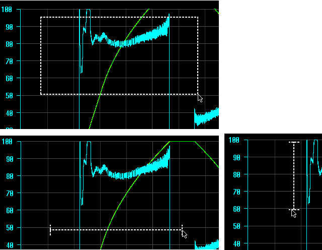

Wenn im "Diagnose-Trace" ein neuer Trace-Ergebnissatz angezeigt wird (z. B. nach Beendigung einer Trace-Aufzeichnung), wird der Zoombereich standardmäßig wie folgt berechnet:
Horizontal füllt der Messzeitbereich das Diagramm aus und die horizontale Scrollleiste den gesamten Scrollleistenbereich.
Vertikal füllen die Messdaten für alle Signale den sichtbaren Diagrammbereich aus, der scrollbare Bereich ist jedoch größer. Dadurch befindet sich der Scrollleistenbereich teilweise ober- und unterhalb der Signalkurven.
Die Größe der Schieberegler auf beiden Scrollleisten wird automatisch der Diagrammgröße entsprechend angepasst. Es gibt eine Mindestgröße, ab der der Schieberegler nicht kleiner wird, jedoch weiteres Vergrößern möglich ist.
Die Einzelschritt- und Seitenschrittwerte beider Scrollleisten werden automatisch dem aktuellen Zoombereich entsprechend angepasst.
Beim Vergrößern oder Verkleinern ist der Mittelpunkt des Zooms wie folgt:
Mittelpunkt des sichtbaren Diagrammbereichs (bei Verwendung von Tastenkombinationen)
Aktuelle Position des Mauszeigers (bei Verwendung von <STRG> + Mausrad)
Mittelpunkt zwischen zwei Fingern (bei Verwendung von Touch-Gesten). Sie können in die Anzeige hinein- oder aus ihr herauszoomen, indem Sie zwei Finger zum Zoom-Mittelpunkt hin- oder davon wegbewegen.
Bei jedem Drücken der Tastenkombinationen <STRG++> oder <STRG+-> wird in der/den ausgewählten Zoomrichtung(en) um 10 % des sichtbaren Bereichs hinein- oder herausgezoomt. Beispiel: Wenn der ursprünglich sichtbare Bereich auf der horizontalen Achse 10,0 Sekunden beträgt, liegt der neue sichtbare Bereich nach dem Hineinzoomen bei 9,0 Sekunden.
Beim Hinein- oder Herauszoomen mit der Tastatur bleibt der Mittelpunkt des sichtbaren Diagrammbereichs unverändert. Beispiel: Wenn der ursprünglich sichtbare Bereich bei 0,0 bis 10,0 Sekunden liegt und der Anwender um 10 % verkleinert, liegt der neue sichtbare Bereich zwischen 0,5 und 9,5 Sekunden.
Ausnahme von der obigen Regel: die Scrollleiste ist so eingestellt, dass die Grenze des Messdatenbereichs an einem Ende erreicht wurde und der Anwender versucht, weiter zu verkleinern. In diesem Fall wird nur ein Ende des sichtbaren Datenbereichs geändert. (Beispielsweise Verkleinern von 0,0 - 5,0 Sekunden auf 0,0 - 6,0 Sekunden bei vollständig nach links gezogener Scrollleiste, da keine Daten kleiner als Null sind.)
Bei jeder Bewegung des Mausrads wird in der/den ausgewählten Richtung(en) um 5 % des sichtbaren Bereichs hinein- oder herausgezoomt.
Im Zoom-Modus wird durch Gedrückthalten der linken Maustaste und Ziehen mit der Maus ein "Rechteck" aufgezogen. Beim Loslassen der Maustaste wird das Diagramm vergrößert, sodass der Bereich im Auswahlrechteck sichtbar ist.
Die Grenzen des Auswahlrechtecks werden in beide Richtungen übernommen. Daher können horizontale und vertikale Achse um einen unterschiedlichen Wert skaliert werden (d. h., das Seitenverhältnis bleibt nicht erhalten).
Wenn nur die horizontale oder vertikale Zoom-Richtung ausgewählt ist, erscheint statt des Rechtecks eine horizontale oder vertikale Linie. Beim Loslassen der Maustaste wird das Diagramm nur in der ausgewählten Richtung gezoomt.
